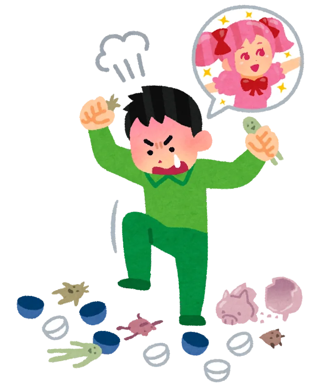
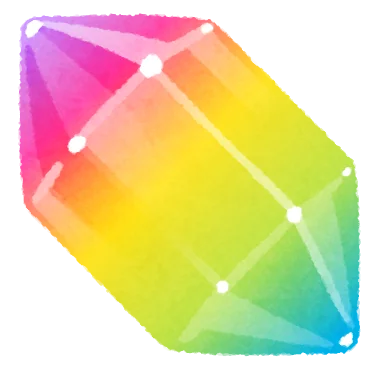
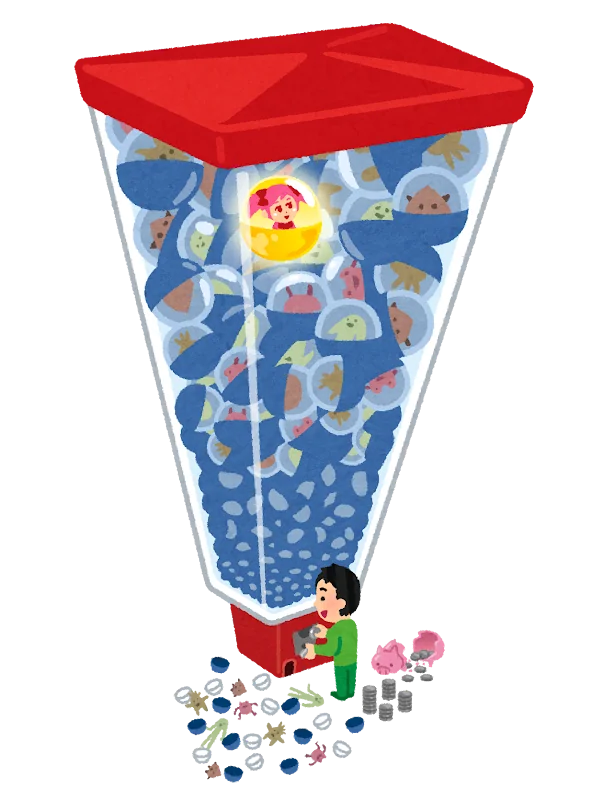
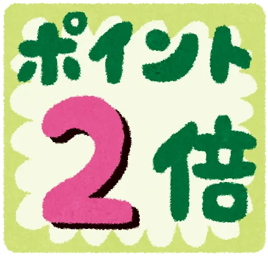
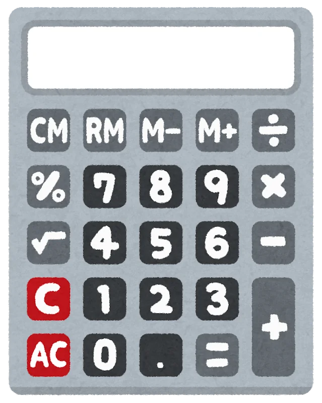
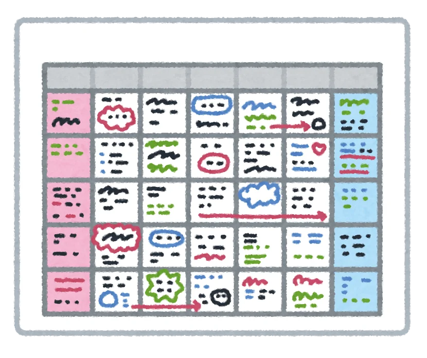
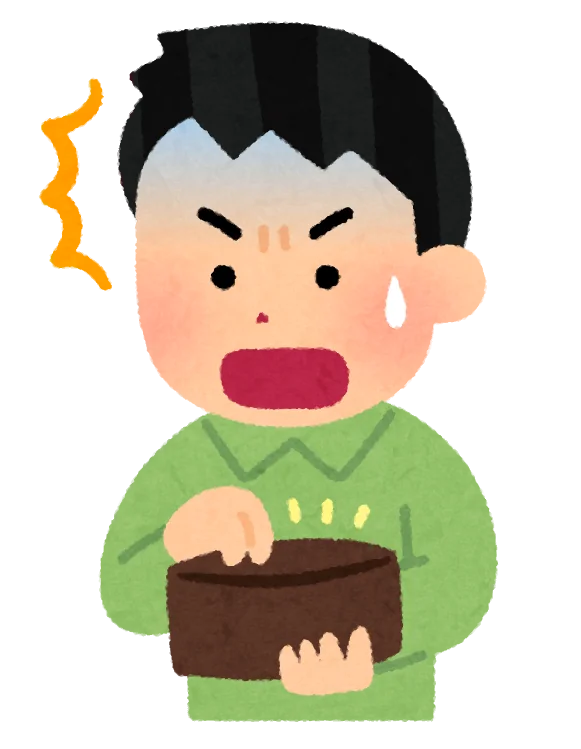

ヴェスナガチャはいくら？天井まで何連・必要な原石を計算【原神Ver.7.1】
「ヴェスナが欲しいけど、天井まで回したらいくら？」
現在開催中のヴェスナガチャ「花風にひらめく歓び」は、2026年10月13日18:59までです。
先に結論をまとめます。
ヴェスナを引くために必要な金額の目安
| 状況 | 必要な原石 | 原石0から購入する目安 |
|---|---|---|
| 10連 | 1,600個 | 約2,810円 |
| ★5天井・90連 | 14,400個 | 約22,260円 |
| 最大180連でヴェスナ確定 | 28,800個 | 約43,430円 |
※PC/Android版・初回2倍使用済み・2026年10月時点。必要数以上になるよう創世結晶を購入した場合の当サイト計算です。価格・ボーナスは変更される場合があります。
【結論】
最大180連でヴェスナ確定。
180連＝28,800原石＝約43,430円が最悪ケースの目安です。
ただし、実際には手持ちの原石や現在の天井カウントによって、必要な金額はかなり少なくなることがあります。
ヴェスナの天井は何連？
キャラクターイベント祈願では、
90連以内に★5キャラクターが確定
します。
ただし、その★5が必ずヴェスナになるとは限りません。

そのため、ヴェスナを確実に入手する最大ラインとして見るのが、
最大180連
です。
必要な原石は、
180 × 160＝28,800原石
になります。
ヴェスナを天井まで引くといくら？
原石をまったく持っていない状態から、28,800原石を課金だけで用意するとします。
現在のPC・Android版では、創世結晶6,480個＋通常ボーナス1,600個の合計8,080個が12,000円です。

各パックを組み合わせて28,800個以上を用意する場合、
約43,430円
がひとつの目安になります。
つまり、
最大180連でヴェスナ確定まで最悪ケースで追うなら、4万円を超える可能性があります。
ただしこれは、
- 原石0
- 紡がれた運命0
- 天井カウント0
- 初回2倍使用済み
- 最大180連まで必要
という条件です。
実際にはもっと少なく済むケースが多いです。
90連ならいくら？
まず★5キャラクターが確定する90連までなら、
14,400原石
必要です。
原石0から通常ボーナスで必要数以上を購入すると、
約22,260円
が目安です。

すでに60連まで引いているなら、残りは30連。
その場合に必要なのは、
30 × 160＝4,800原石
だけです。
初回2倍が残っているなら金額はかなり下がる
創世結晶は、初回購入時に2倍になるボーナスがあります。

PC・Android版では、
- 6,480個 → 初回12,960個：12,000円
- 980個 → 初回1,960個：1,840円
となっています。
この2つだけでも、
14,920個
になるため、★5天井の90連に必要な14,400原石を超えます。
つまり初回2倍が残っていれば、
13,840円で90連分を用意可能
です。
まず自分のショップ画面で、初回2倍が残っているか確認してみてください。
今何連？ヴェスナまでの必要額を計算
自分の場合にあといくら必要なのかは、
- ① 天井まであと何連か確認
- ② 残り回数 × 160
- ③ 手持ち原石を引く
これだけです。

たとえば、
- 現在50連
- 手持ち原石2,000個
なら、
90－50＝40連
40 × 160＝6,400原石
6,400－2,000＝
あと4,400原石
です。
最初から90連・180連分を買う必要はありません。
ヴェスナガチャはいつまで？
開催期間は、
Ver.7.1アップデート後～2026年10月13日18:59
です。

ピックアップ対象は限定★5キャラクター、
雪の宴に咲く刃・ヴェスナ（風）
「花風にひらめく歓び」
です。
★4では、
- ディオナ
- ファルザン
- 重雲
の出現確率がアップしています。
ヴォジャニーツァと天井は共有される？
共有されます。
現在同時開催中の、
ヴェスナ
「花風にひらめく歓び」
ヴォジャニーツァ
「波の叙情歌」
は、キャラクターイベント祈願同士で祈願回数と天井を共有します。
途中まで引いた回数は無駄にならない
たとえばヴォジャニーツァ側で70連引いたあと、ヴェスナ側へ切り替えても、天井カウントが0に戻るわけではありません。
なので「どちらを引くか」で迷っている場合でも、途中まで引いた回数が無駄になるわけではありません。
ヴェスナを引く前に確認したいこと
課金額を決める前に、
課金前に確認したい4つ
- 現在の祈願回数
- 手持ち原石
- 紡がれた運命
- 初回チャージ2倍
の4つを確認しておくのがおすすめです。
生活費への影響に注意
欲しいキャラが来ると追加で回したくなりますが、最大天井まで追えば数万円になることもあります。
生活費や毎月の支払いに影響しない範囲で楽しみましょう。
ゲームとは別に、急な出費で手元資金が必要な場合は
ここからは、ヴェスナガチャへの課金とは別の話です。
急な出費が重なり、一時的に手元資金そのものが不足することがあります。

そうした場合の資金調達方法のひとつに、
＼カードローン／
があります。
カードローンには審査があり、借入額に応じて利息が発生します。
利用する場合は、
借りられる金額ではなく、無理なく返せる金額
を基準に考えることが大切です。
カードローン「セントラル」
セントラルは、20歳以上で定期的な収入と返済能力を有し、同社の基準を満たす方を対象とするカードローンです。
セントラルの主な貸付条件
| 項目 | 内容 |
|---|---|
| 貸付利率 | 実質年率4.80％～18.00％ |
| 契約限度額 | 1万円～300万円 |
| 対象 | 20歳以上で定期的な収入と返済能力を有し、同社基準を満たす方 |
| 担保・連帯保証人 | 不要 |
| 遅延損害金 | 年20.00％ |
| 返済方式 | 借入残高スライドリボルビング方式 |
| 1万円～30万円の返済期間 | 最終借入日から最長3年・1～32回 |
| 30万円超～300万円の返済期間 | 最終借入日から最長4年・1～47回 |
| 審査 | あり |
初めて利用する場合
条件を満たす場合、
契約日の翌日から最大30日間金利0円
となります。
※「借入日の翌日」ではなく「契約日の翌日」からです。
セントラルの金利・利用条件を確認する
※申込み前に貸付条件と返済計画をご確認ください。
返済すると総額はいくらになる？
カードローンは、借りた金額だけを返せば終わりではなく、利息が発生します。
セントラル公式サイトでは、代表例として、
実質年率18.00％で30万円を借り、30日ごとに3万円ずつ返済する場合
が掲載されています。
この例では、
返済回数：11回
返済総額：327,065円
となり、
30万円の元金に対して、利息を含めた総支払額は327,065円
です。
借入条件や返済ペースによって実際の金額は変わるため、申込み前に返済総額を確認してください。
借りる前に確認してください
カードローンは、「使えるお金が増えるサービス」ではなく、返済が必要な借入れです。
借りた金額に応じて利息が発生します。
利用する場合は、生活費や今後の支払いを含めても無理なく返済できるか確認しましょう。
まとめ｜ヴェスナを引くなら最大180連
ヴェスナガチャのポイントをまとめます。
ヴェスナガチャのポイント
- 開催終了：2026年10月13日18:59
- ★5天井：最大90連
- 最大180連でヴェスナ確定
- 90連：14,400原石
- 180連：28,800原石
原石0・通常ボーナスの場合、
課金額の目安（PC/Android版・初回2倍使用済み・2026年10月時点）
- 90連：約22,260円
- 180連：約43,430円
が目安です。
ただし、現在の祈願回数・手持ち原石・初回2倍によって、実際の必要額は大きく変わります。
まずは自分の現在の天井までの残り回数を確認してから計算してみてください。
広告・貸付条件について
本ページにはアフィリエイト広告が含まれています。
株式会社セントラル
〒790-0013
愛媛県松山市河原町9-2 クロカワビル2F
登録番号：四国財務局長（10）第00083号
日本貸金業協会会員 第001473号
貸付利率：実質年率4.80％～18.00％
遅延損害金：年20.00％
契約限度額：1万円～300万円
返済期間：最短1回～最長47回／最長4年
※契約額により返済回数・期間が異なります。
返済方式：借入残高スライドリボルビング方式
担保・連帯保証人：不要
利用には審査があります。
代表返済例：実質年率18.00％で30万円を借り、30日ごとに3万円ずつ返済した場合、11回払い・返済総額327,065円。
貸付条件や返済例などの最新情報は、セントラル公式サイトをご確認ください。